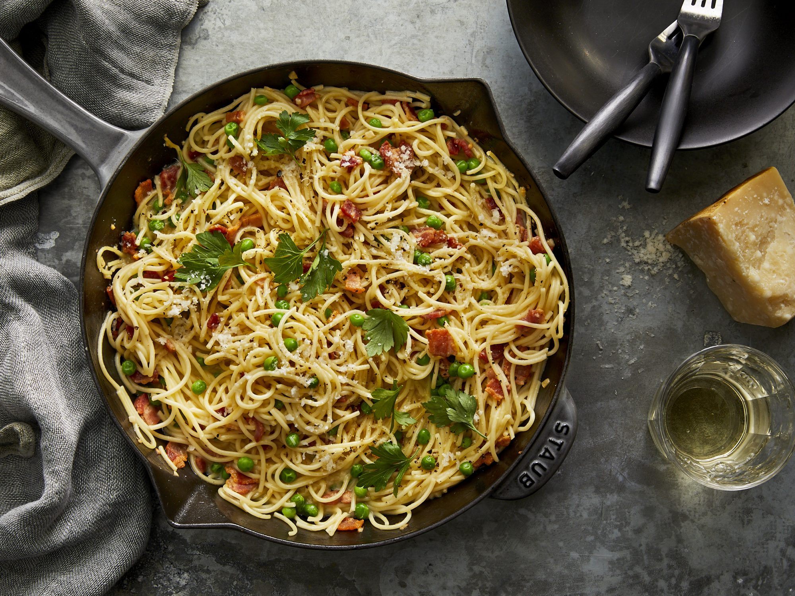

Go Back
Spaghetti Carbonara

Description:
An italian classic made from only a few ingredients is sure to blow your guests away when done correctly! The spaghetti carbonara
tastes delicious regardless of the season or occassin.
Ingredients:
- 100g pancetta
- 50g pecorino cheese
- 50g parmesan
- 3 large eggs
- 350g spaghetti
- 2 garlic cloves
- 50g unsalted butter
- salt and pepper for taste
Steps:
- Bring a large saucepan to the boil and add the spaghetti and cook till al dente
- Bring the pecorino cheese, parmesan and eggs together to create a carbonara mix
- Fry the pancetta with the garlic with the butter
- Once the pancetta is fried off and golden in colour, turn the heat down to low
- Add the spaghetti to the pan and keep some of the pasta water
- Take the pan off the heat and quickly add the carbonara mix and stir
- Add some pasta water to the pan to loosen the mix and evenly coat the pasta
- You're now done! Add the spaghetti to the plate and sprinkle some parmesan cheese on top